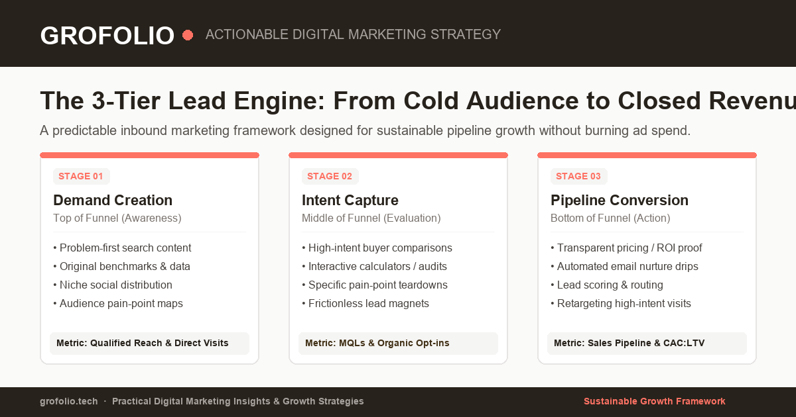

B2B Digital Marketing Strategy: A Practical Framework for Sustainable Lead Generation
Most marketing budgets leak money into vanity traffic that never turns into revenue. Here is a battle-tested inbound engine that captures high-intent prospects and converts them reliably.

The core friction: Most marketing teams purchase traffic before understanding buying intent. When ad spend pauses, pipeline dries up immediately. A sustainable strategy builds compounding assets—organic search intent, problem-solving resources, and high-trust nurture loops—that deliver qualified leads month after month.
The short version
- What it is: A structured 3-stage marketing framework (Demand Creation, Intent Capture, and Pipeline Conversion) focused entirely on business revenue.
- What it does for you: Replaces disconnected marketing tasks with a unified system that reduces Customer Acquisition Cost (CAC) and accelerates sales cycles.
- Where it stops: It will not rescue an undefined value proposition or a product without clear market demand. Consistency over 90 days is required.
Why typical digital marketing plans fail
Most companies treat digital marketing as a collection of disconnected chores. They write blog posts that nobody searches for. They run paid ads to generic landing pages. They track impressions, page views, and social media likes, then wonder why sales pipeline remains flat.
The error is chasing attention instead of intent.
A buyer searching for generic educational advice is rarely ready to purchase. A buyer searching for comparison criteria, pricing benchmarks, or integration workflows has an active business problem. A successful marketing strategy aligns your resources with that commercial reality.
Stage 1: Demand creation (Top of funnel)
Demand creation introduces your brand to prospective buyers before they enter a formal procurement cycle. At this stage, your audience is problem-aware, not product-aware.
Do not pitch your software or services here. Focus entirely on diagnosing the friction your customer feels every morning:
- Original data and benchmarks: Publish proprietary surveys, industry benchmarks, or cost breakdowns that readers cannot find anywhere else.
- Pain-point problem breakdowns: Write articles that unpack exact operational bottlenecks, such as workflow delays, compliance traps, or wasted spend.
- Niche distribution: Distribute takeaways where your buyers already congregate—industry newsletters, technical communities, and curated forums.
Stage 2: Intent capture (Middle of funnel)
Once a prospect understands their problem, they actively evaluate potential solutions. This is where high-intent organic search engine optimization (SEO) and commercial assets generate outsized returns.
Build dedicated content addressing specific buyer questions:
- Alternative and comparison guides: Buyers search "[Competitor] alternatives" or "[Tool A] vs [Tool B]" when they are on the verge of spending money. Provide unbiased, transparent comparisons.
- Interactive tools and calculators: An ROI calculator, an audit checklist, or a diagnostic scorecard delivers immediate, tangible utility.
- Actionable templates: Give away the actual spreadsheets, SOPs, or code snippets your team uses internally. Practical utilities earn genuine trust.
Stage 3: Pipeline conversion (Bottom of funnel)
Capturing a contact is only half the battle. Your conversion layer must qualify that prospect and move them cleanly into an active sales conversation.
Remove artificial barriers:
- Frictionless scheduling: If you sell high-touch B2B solutions, embed instant calendar booking on high-intent conversion pages. Do not make a ready buyer wait 48 hours for an email reply.
- Automated 4-part nurture sequence: Deliver the requested resource instantly. Follow up with a common implementation mistake, a case study showing concrete numbers, and a direct invitation to evaluate their specific situation.
- Intent-based lead scoring: Track buyer behavior. A prospect downloading a template is an educational contact; a prospect visiting your pricing and integration pages twice in one week is a sales-ready lead.
How to allocate your marketing budget
Stop spreading your budget equally across six different ad channels. Here is a balanced allocation framework tested across growing B2B businesses:
| Channel Category | Budget Share | Primary Objective | Key Success Metric |
|---|---|---|---|
| Organic Search & Content | 40% | Compounding search assets & topic clusters | Organic MQLs, Search Impressions |
| High-Intent Paid Search | 30% | Capture exact bottom-of-funnel queries | Cost Per Qualified Lead (CPQL) |
| Conversion Optimization & Email | 20% | Nurture leads & remove booking friction | Lead-to-Opportunity Conversion Rate |
| Experimental Testing | 10% | Test emerging platforms, podcasts, sponsorships | Validation of new pipeline source |
What this strategy is not
- It is not a silver bullet for weak positioning: If your offering does not solve an acute, painful problem, no marketing strategy can make people buy.
- It is not an overnight hack: Compounding organic search and domain authority take 60 to 90 days of consistent publishing to gain momentum.
- It is not an excuse for vanity metrics: If an activity generates traffic but does not produce sales conversations, cut it ruthlessly.
Takeaway & immediate action
Sustainable marketing comes from owning durable assets, not renting temporary impressions.
Your action this week: Audit your top 5 highest-traffic pages in Google Analytics or Search Console. Identify the exact search query bringing visitors to each page. If the page does not offer a specific next step aligned with that intent, add one clear call-to-action today.
Recommended resources
- About Grofolio — Our editorial mission and marketing research methodology.
- Google Search Central: SEO Starter Guide — Official documentation on search intent and site structure.